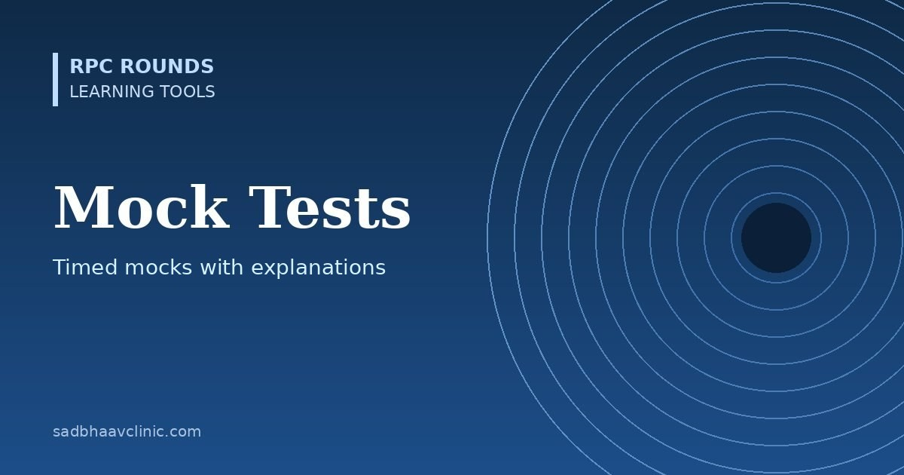

Free Ophthalmology Mock Tests: OKAT, NEET-PG, DNB, FRCOphth, OKAP
For: PG residents
Last updated: November 2026
Free, timed 50-question mock tests for ophthalmology residents, PG aspirants and ophthalmologists preparing for exams abroad. Each one gives a score, a topic-wise breakdown and a full explanation for every question. Practice mode shows answers as you go, and your progress is saved in your browser.
🌍 Studying outside India? See our guides for international students: OKAP, FRCOphth and NBEO study plans.
📘 Which book for your exam? Use the book chooser to see the question bank written for OKAT, MS/DNB, FICO, FRCOphth, OKAP, ABO, FEBO or optometry licensing, and the free practice on this site.
Preparing for a viva or OSCE too? Practise with the Viva Hot Seat and revise trials with the landmark trials cheat sheet.
AIOS-OKAT (samples from OKAT Decoded)


OKAT Decoded: the complete question bank
OKAT Decoded is a three-volume question bank by Dr Dhaval Patel: 10,200 original MCQs, each with an explanation, a reason why every other option is wrong, and a pearl, plus 18 full-length mock tests.

FRCOphth Decoded
FRCOphth Decoded by Dr Dhaval Patel: Part 1 (3,484 SBAs) and Part 2 Written (4,725 SBAs), every option explained with a "why not" for each distractor and a pearl, plus 8 full mock examinations.
ICO, OKAP, ABO and FEBO (samples from the Decoded books)


New: Decoded books for the ICO, OKAP, ABO and FEBO exams
FICO Decoded (3,336 MCQs), OKAP & ABO Decoded (3,721) and FEBO Decoded (3,721) join FRCOphth Decoded and OKAT Decoded. Every option explained, with full mock examinations in each book.
Optometry licensing (samples from OptomDecoded)

New for optometrists: OptomDecoded
5,885 original MCQs, 150 OSCE stations and 800 viva questions for optometry licensing exams (NBEO, OCANZ, OEBC, UK and India), every option explained with a "why not" and a pearl.
Other exams
Working or training abroad
Preparing for practicals as well? Try the 87 OSCE spot stations, the Viva Hot Seat and the landmark trials by subspecialty.
How to get the most from a mock
- Take it timed and in one sitting, about one minute per question, as in the real exam.
- Read the explanation for every question, including the ones you got right: most exam traps sit in the wrong options.
- Use the topic breakdown to choose what to revise, then retake the test a week later.
Short quizzes also appear at the end of many articles (look for "Test yourself"). For quick reference while revising, use the Clinic Desk Reference cards and the Learning Dashboard. Exam guides: AIOS-OKAT and OKAP, FRCOphth and ICO.
All questions are original. They are not taken from any past examination paper, and these tests are not affiliated with AIOS, NBEMS, AIIMS, the Royal College of Ophthalmologists, the ICO or the AAO.
📘 Want more exam-ready material? See Most Commons in Ophthalmology on Kindle, or browse all my books.
How to cite this page
Patel D. Free Ophthalmology Mock Tests: OKAT, NEET-PG, DNB, FRCOphth, OKAP. RPC Rounds (Sadbhaav Eye Clinic). Updated October 2026. Available at: https://www.sadbhaavclinic.com/mock-tests.html. Accessed [date].
Looking for an eye specialist in Ahmedabad? Learn about our Eye Department or book a consultation with Dr. Dhaval Patel.